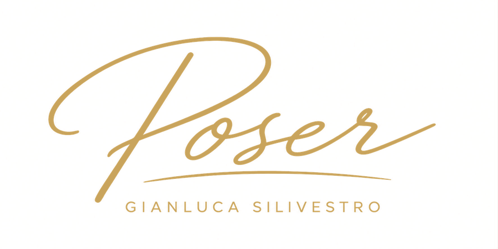

01
Nanoplastia
Un percorso per capelli più disciplinati, da valutare in base alla struttura e alle esigenze dei tuoi capelli.

PoserColore, schiariture, nanoplastia ed extension. In POSER iniziamo ascoltando il risultato che desideri, per costruire insieme il percorso più adatto ai tuoi capelli.
Ogni risultato parte da una consulenza: ascoltiamo la tua idea e valutiamo insieme il servizio più adatto.
Un percorso per capelli più disciplinati, da valutare in base alla struttura e alle esigenze dei tuoi capelli.
Luce, contrasto e movimento: definiamo il risultato considerando la base di partenza e la storia del capello.
Una consulenza per scegliere tonalità e servizio in armonia con il look che hai in mente.
Per chi desidera un cambiamento distintivo, studiato insieme in base al risultato richiesto.
Più lunghezza o pienezza: valutiamo insieme il risultato, la tonalità e la soluzione adatta.
Non hai ancora deciso? Partiamo dalla tua idea e capiamo quali possibilità approfondire.
Rispondi a tre domande e prepara un messaggio personalizzato da inviare direttamente a POSER su WhatsApp.
Le foto possono ispirare; il confronto ci aiuta a scegliere ciò che ha senso per te.
Hai una domanda o vuoi prenotare una consulenza? Scrivici: raccontaci cosa vorresti fare e ti aiuteremo a capire da dove cominciare.